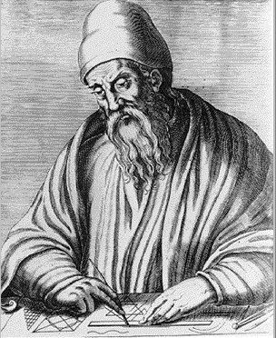

Welcome to the Mathematical World!
Euclid
Father of Geometry
Euclid (c. 300 BCE) was a Greek mathematician who lived and worked in Alexandria, Egypt during the reign of Ptolemy I. Very little is known about his personal life, but his work shaped the entire history of mathematics. He is most famous for writing a monumental textbook called Elements, which organized and systematized the field of geometry. Because of this, he is widely known as the "Father of Geometry."
The Book: Elements
Euclid’s Elements is one of the most influential textbooks ever written. It consists of 13 books covering topics like:
- Plane geometry
- Number theory
- Proportions
- Solid geometry
Rather than just listing facts, Euclid started with basic definitions, postulates, and axioms, and then used logical reasoning to build up the rest of geometry — step by step — using proofs.
This method of deductive reasoning became the foundation of mathematical thinking for over 2,000 years.
Euclid's Five Postulates (Basic Assumptions of Geometry)
Here are his five most famous geometric postulates:
- A straight line can be drawn from any point to any other point.
- A finite straight line can be extended continuously in a straight line.
- A circle can be drawn with any center and radius.
- All right angles are equal to each other.
- (The Parallel Postulate): If a straight line crosses two other straight lines and the interior angles on one side add up to less than two right angles, those two lines, if extended, will eventually meet on that side.
The fifth postulate (the parallel postulate) puzzled mathematicians for centuries and eventually led to the development of non-Euclidean geometry.
Key Theorems from Elements
Many of the theorems in Euclid’s Elements are still taught in high school geometry today. Here are a few:
- Pythagorean Theorem (Book I, Proposition 47):
In a right-angled triangle:
\[ a^2 + b^2 = c^2 \] Where \(a\) and \(b\) are the legs, and \(c\) is the hypotenuse. - Triangle Congruence:
Two triangles are congruent if:
- They have two equal sides and the included angle equal (SAS),
- Or all three sides are equal (SSS), etc. - The sum of angles in a triangle:
The interior angles of any triangle add up to 180 degrees. - Circle geometry:
He proved many properties of angles, chords, and tangents related to circles.
Number Theory and Proportions
Euclid didn’t only study shapes; he also made big contributions to number theory. He defined prime numbers and explained how to find the greatest common divisor (GCD) using what’s now called Euclid’s Algorithm.
Euclid’s Algorithm for GCD:
To find the GCD of two numbers \(A\) and \(B\) (where \(A > B\)):
- Divide \(A\) by \(B\) and find the remainder \(R\).
- Replace \(A\) with \(B\) and \(B\) with \(R\).
- Repeat until the remainder is 0. The last non-zero remainder is the GCD.
Example:
Find GCD of 48 and 18
\(48 \div 18 = 2\) remainder \(12\)
\(18 \div 12 = 1\) remainder \(6\)
\(12 \div 6 = 2\) remainder \(0\)
GCD = 6
This is still used in computer science and math today.
Influence and Legacy
Euclid’s Elements became the standard textbook for teaching mathematics in Europe, the Middle East, and beyond for over 2,000 years. It was second only to the Bible in terms of how many copies were printed and studied.
His method of logical structure, starting from assumptions and building knowledge step-by-step through proofs, laid the foundation not just for geometry but for all of mathematics.
Euclid also wrote other works on optics, data, and division of figures, though Elements is his most famous.